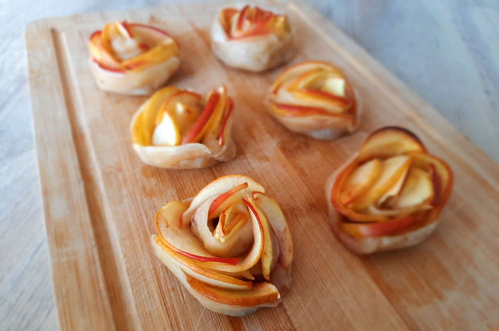

appelroosjes
Genoeg voor ongeveer 7 roosjes!

Bereidingsduur: 45 minuten
Aantal personen: 7
Ingrediënten:
2 appels
2 eetlepels citroensap
5 plakjes bladerdeeg
1,5 eetlepels jam
1,5 theelepels kaneel
naar smaak rozijnen
naar smaak poedersuiker
2 appels
2 eetlepels citroensap
5 plakjes bladerdeeg
1,5 eetlepels jam
1,5 theelepels kaneel
naar smaak rozijnen
naar smaak poedersuiker
Instructies:
1. Snijd de appels door de helft en verwijder het klokhuis. Snijd de appel is dunne halve schijfjes. Doe de stukjes samen met het citroensap in een kommetje met kokend water. Zo worden de appelschijfjes zachter. Laat enkele minuutjes staan en haal ze er weer uit.
2. Verwarm de oven voor op 200 graden. Snijd ieder plakje bladerdeeg in 3 reepjes. Maak van twee verschillende reepjes een grote reep en doe dit met 14 reepjes. Bestrooi de reepjes met kaneel, jam en enkele rozijnen. Leg de halve appelschijfjes op de bovenste helft van het deeg met de ronde kant naar boven. Laat de schijfjes overlappen.
3. Vouw de onderste helft van het deeg een stukje over de appels heen. Rol nu vanaf de zijkanten het deeg op tot een roosje. Gebruik het overige deeg om de roosjes te versterken.
4. Neem wat bakpapier en leg hierop het roosje en vorm het papier om het roosje heen. Doe dit met ieder roosje. En zet de roosjes op een ovenplaat. Verwarm gedurende 30 minuten in de oven.
1. Snijd de appels door de helft en verwijder het klokhuis. Snijd de appel is dunne halve schijfjes. Doe de stukjes samen met het citroensap in een kommetje met kokend water. Zo worden de appelschijfjes zachter. Laat enkele minuutjes staan en haal ze er weer uit.
2. Verwarm de oven voor op 200 graden. Snijd ieder plakje bladerdeeg in 3 reepjes. Maak van twee verschillende reepjes een grote reep en doe dit met 14 reepjes. Bestrooi de reepjes met kaneel, jam en enkele rozijnen. Leg de halve appelschijfjes op de bovenste helft van het deeg met de ronde kant naar boven. Laat de schijfjes overlappen.
3. Vouw de onderste helft van het deeg een stukje over de appels heen. Rol nu vanaf de zijkanten het deeg op tot een roosje. Gebruik het overige deeg om de roosjes te versterken.
4. Neem wat bakpapier en leg hierop het roosje en vorm het papier om het roosje heen. Doe dit met ieder roosje. En zet de roosjes op een ovenplaat. Verwarm gedurende 30 minuten in de oven.